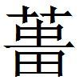
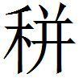
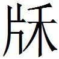

魏二
犀首田盼欲得齊魏之兵以伐趙
犀首、田盼欲得齊、魏之兵以伐趙，梁君與田侯〔一〕 不欲。犀首曰：「請國出五萬人，不過五月而趙破。」田盼曰：「夫輕用其兵者，其國易危；易用其計者，其身易窮。公今言破趙大易，恐有後咎。」犀首曰：「公之不慧也。夫二君者，固已不欲矣。今公又言有〔二〕 難以懼之，是趙不伐，而二士〔三〕 之謀困也。且公直言易，而事已去矣。夫難搆而兵結，田侯、梁君見其危，又安敢釋卒不我予乎？」田盼曰：「善。」遂勸兩君聽犀首。犀首〔四〕 、田盼遂得齊、魏之兵。兵未出境，梁君、田侯恐其至而戰敗也，悉起兵從之，大敗趙氏。
〔一〕 鮑本 閔王。正曰：事在齊宣十一年，魏惠後三年，趙肅侯十八年。公孫衍欲敗從，田盼本非與謀，故其聞衍之說，猶能以用兵難之。既而訹於其言，勸兩君以聽衍而身將齊、魏之兵，蓋狃於戰鬥之習，墮衍計中，以成其欺，以敗和好，快讎秦之欲，皆盼之為也。觀馬陵之役，魏客之言，張丑說楚之辭，知盼為鄰國所畏，百姓所服。今以此事觀之，盼亦優於勇而短於謀者也。
〔二〕 姚本 曾添「有」字。鮑本 無「有」字。
〔三〕 姚本 一作「君」。鮑本 二士，衍、盼。
〔四〕 鮑本 「犀首」二字不重。補二字。
犀首見梁君
犀首見梁君曰：「臣盡力竭知，欲以為王廣土取尊名，田需〔一〕 從中敗君〔二〕 ，王又聽之，是臣終無成功也。需亡，臣將侍；需侍，臣請亡。」王曰：「需，寡人之股掌〔三〕 之臣也。為子之不便也，殺之亡之〔四〕 ，毋謂天下何，內之無若群臣何也〔五〕 ！今吾為子外之，令毋敢入〔六〕 子之事。入子之事者，吾為子殺之亡之，胡〔七〕 如？」犀首許諾。於是東見田嬰，與之約結；召文子〔八〕 而相之魏，身相於韓。〔九〕
〔一〕 姚本 前作田繻，今直言需。
〔二〕 鮑本 補曰：一本標「君」一作「臣」，又作「之」。札记 今本「君」作「臣」。
〔三〕 鮑本 猶股肱。
〔四〕 鮑本 補曰：一本標云，有「外之」字。札记 丕烈案：有者當是。此讀「外之毋謂天下何」七字為一句，與下「內之」為對文，涉「今吾為子外之」而脫。
〔五〕 鮑本 內，謂親之。稱「群臣」，則衍與焉。正曰：言殺之亡之，天下之人與內之群臣，皆不以為然也。
〔六〕 姚本 入，猶與也。曾、劉無此注。
〔七〕 鮑本 胡，猶何。
〔八〕 鮑本 田文。
〔九〕 姚本 曾題，劉連。〔校一〕 鮑本 補曰：田文為魏相，蓋犀首約結於嬰，召其子而相之也。下章與此同。事宜在襄王時，非文奔魏相昭王事也。身相韓，衍欲相韓也。下言置田需以稽二人，則衍仍留魏矣。一本此下別為一章。〔校一〕 曾鞏本，另篇。劉敞本，此篇與下篇蘇代為田需說魏王 連篇，鮑本亦同。
蘇代為田需說魏王
蘇代為田需說魏王曰：「臣請問文之為〔一〕 魏，孰與其為齊也？」王曰：「不如其為齊也。」「衍之為魏，孰與其為韓也〔二〕 ？」王曰：「不如其為韓也。」而〔三〕 蘇代曰：「衍將右韓而左魏，〔四〕 文將右齊而左魏。二人者，將用王之國，舉事於世，中道〔五〕 而不可，王且無所聞之矣〔六〕 。王之國雖滲〔七〕 樂而從〔八〕 之可也〔九〕 。王不如舍〔一〇〕 需於側，以稽二人者之所為。二人者曰：『需非吾人也〔一一〕 ，吾舉事而不利於魏，需必挫我於王。』二人者必不敢有外心矣。二人者之所為之〔一二〕 ，利於魏與不利於魏，王厝〔一三〕 需於側以稽之，臣以為身利〔一四〕 而〔一五〕 便於事〔一六〕 。」王曰：「善〔一七〕 。」果厝需於側。〔一八〕
〔一〕 姚本 為，助也。曾、劉無此注。
〔二〕 鮑本 衍，陰晉人，時屬韓，故下蘇代說昭魚亦云。正曰：陰晉，魏地，衍實魏人，其善韓非以此。
〔三〕 鮑本 衍「而」字。
〔四〕 姚本 右，近；左，遠。曾、劉無此注。鮑本 右，言助之力。正曰：時尚右，說見趙策 。
〔五〕 鮑本 中道，猶中立也，言不能兩全二國。
〔六〕 鮑本 不聞所以救之。正曰：彼有外心，王不得而聞之。
〔七〕 鮑本 言浸微浸弱，如漏器然。
〔八〕 姚本 曾作「後」。
〔九〕 鮑本 言如漏器，尚足樂，雖從二子可也。然從二子必亟亡，不得如是也。補曰：「滲樂」未詳。札记 丕烈案：此當作「操藥」，形近之訛也。言國病甚。鮑所讀非。
〔一〇〕 鮑本 舍，猶厝。
〔一一〕 鮑本 需非二人之黨。
〔一二〕 姚本 劉去「之」。
〔一三〕 鮑本 「厝」，「措」同。
〔一四〕 姚本 劉去「身利」字。鮑本 身，王身。
〔一五〕 姚本 一本無「而」字。
〔一六〕 鮑本 「而」下有「國」字。補曰：一本「而便於事」。又姚注云，劉去「身利」字，一無「而」字，似義長。
〔一七〕 札记 今本「善」誤「然」。
〔一八〕 鮑本 彪謂：哀王於是有人君之言，不亡需是也。惜其不旋踵，需不入衍之事，蘇代入之矣！待衍如是可也，如得賢而付之閫外，若此者不亦殆乎！正曰：魏王始聽犀首而欲外田需，復因蘇代而置需以稽二人。賢否之不知，用舍之不能，熒惑於游士之言，而拱手以聽之，其孱昏甚矣！
史舉非犀首於王
史舉〔一〕 非犀首於王。犀首欲窮之，謂張儀曰：「請令王讓先生以國〔二〕 ，王為堯、舜矣；而先生弗受，亦許由也。衍請〔三〕 因令王致萬戶邑於先生〔四〕 。」張儀說，因令史舉數見犀首。王聞之而弗任也〔五〕 ，史舉不辭而去。〔六〕
〔一〕 鮑本 即甘茂所事。
〔二〕 鮑本 衍以此說儀，使之為己解舉，故舉後見之。
〔三〕 鮑本 無「請」字。
〔四〕 鮑本 弗受國，故致邑。
〔五〕 鮑本 任，猶信也。舉既非之，而數見之，故王疑之。
〔六〕 鮑本 補曰：據此，讓國之說，不特鹿毛壽之愚燕噲也。此恐惠王時事。
楚王攻梁南
楚王〔一〕 攻梁南，韓氏因圍薔〔二〕 。成恢〔三〕 為犀首謂韓王〔四〕 曰：「疾攻薔，楚師必進矣。魏不能支，交臂而聽楚，韓氏必危，故王不如釋薔。魏無韓患，必與楚戰，戰而不勝，大梁不能守，而又況存薔乎？若戰而〔五〕 勝，兵罷〔六〕 敝，大王之攻薔易矣。」〔七〕
〔一〕 鮑本 懷。
〔二〕 姚本 一本作「薔」。鮑本 「

」作「黃」。下同。補曰：未詳。一本作「薔」。札记 今本「 」作「薔」。〔三〕 鮑本 魏人。
〔四〕 鮑本 襄。
〔五〕 姚本 劉添「而」字。鮑本 無「而」字。
〔六〕 鮑本 罷，音疲。
〔七〕 鮑本 正曰：此策 時不可考。
魏惠王死
魏惠王死，葬有日矣。天大雨雪，至於牛目〔一〕 ，壞城郭，且為棧道而葬。群臣多諫太子者，曰：「雪甚如此而喪行，民必甚病之。官費又恐不給，請弛期〔二〕 更日。」太子曰：「為人子，而以民勞與官費用之故，而不行先王之喪，不義也〔三〕 。子勿復言。」
〔一〕 鮑本 駕車用牛，故以及其目為深候。
〔二〕 鮑本 弛，解也。昔約今解。
〔三〕 姚本 一本無「也」字。
群臣皆不敢言，而以告犀首。犀首曰：「吾未有以言之也〔一〕 ，是其唯惠公〔二〕 乎！請告惠公〔三〕 。」
〔一〕 鮑本 未得其說以說。
〔二〕 姚本 一作薛公。旁出云，一本皆惠子。然其後與此本皆直言惠子，恐惠子者是。鮑本 施也。
〔三〕 姚本 一作「子」。
惠公〔一〕 曰：「諾。」駕而見太子曰：「葬有日矣。」太子曰：「然。」惠公曰：「昔王季歷葬於楚山〔二〕 之〔三〕 尾，灓水齧其墓〔四〕 ，見棺之前和〔五〕 。文王曰：『嘻！先君必欲一見群臣百姓也夫，故使灓水見之。』於是出而為之張於朝〔六〕 ，百姓皆見之，三日而後更葬。此文王之義也。今葬有日矣，而雪甚，及牛目，難以行，太子為及日之故，得毋嫌於欲亟葬乎？願太子更日。先王必欲少留而扶社稷、安黔首〔七〕 也，故使雪甚。因弛期而更為〔八〕 日，此文王之義也。若此而弗為，意者羞法文王乎？」太子曰：「甚善。敬弛期，更擇日。」
〔一〕 姚本 一作「子」。
〔二〕 姚本續 云：呂氏春秋 作「惠公」、「渦山」。
〔三〕 姚本 一本無「之」字。
〔四〕 姚本續 云：後語 作「蠻水」。注，盛弘之荊楚記 曰，「宜都縣有蠻水，即烏水也。今襄州南有烏水」。按，古公亶父以修德為百姓所附，遂杖策去之，與太姜踰梁山而止於岐山之陽。故詩 曰，「率西水許，至于岐下。」是為太王。太王生季歷，季歷卒，葬鄠縣之南，今之葬山名。而皇甫謐云，「楚山一名潏山，鄠縣之南山也」。縱有楚山之名，不宜得蠻水所齧，雖惠子之書五車，未為稽古也。續云：灓，音鸞。說文 云，漏流也，一曰漬也。墓為漏流所漬，故曰「灓水齧其墓」，不必譏惠子也。鮑本 補曰：呂氏春秋 作「葬於渦水之尾」，後云「天故使明水見之」。初學記 引一作「渦山」，論衡 作「滑山」。札记 丕烈案：「初學記 引」四字乃吳氏自注語，吳本注中有注，今刻本多誤，說已見齊策 。
〔五〕 鮑本 和，棺兩頭木。補曰：玉篇 作「

」，胡戈、戶臥二反；廣韻 作「
」，皆云棺頭也。此作「和」，蓋音通。〔六〕 姚本 後語 ，「張帳以朝」。鮑本 無「於」字。張幕帟如朝廷然。補曰：姚本 「張於朝」注，後語 ，「張帳以朝」。按周禮 ，「掌次以待張事」。札记 「於」，鮑本無。丕烈案：呂氏春秋 、論衡 作「張朝」。
〔七〕 鮑本 秦稱民「黔首」，非此時語也。正曰：禮`祭義 亦有「黔首」字，非始於秦。
〔八〕 鮑本 為，猶撰。正曰：下文有。
惠子非徒行其說也，又令魏太子未葬其先王而因又〔一〕 說文 王之義。說文 王之義以示天下，豈小功也哉！〔二〕
〔一〕 鮑本 「因又」作「又因」。札记 丕烈案：呂氏春秋 作「因有」。
〔二〕 鮑本 補曰：雨，去聲。「為之」、「為及」之「為」，去聲。張，之亮反。
五國伐秦
五國伐秦〔一〕 ，無功而還。其後，齊欲伐宋，而秦禁之。齊令宋郭之秦，請合而以伐宋。秦王〔二〕 許之。魏王畏齊、秦之合也，欲講於秦。
〔一〕 鮑本 成皋之役。此十年。
〔二〕 鮑本 昭。
謂魏王曰：「秦王謂宋郭曰：『分宋之城，服宋之強者，六國也。乘宋之敝，而與王〔一〕 爭得者，楚、魏也。請為王毋禁楚之伐魏也，而王獨舉宋。王之伐宋也，請剛柔而皆用之〔二〕 。如宋者，欺之不為逆者〔三〕 ，殺之不為〔四〕 讎者也。王無與之講以取埊，既已得埊矣〔五〕 ，又以力攻之，期於啗宋而已矣。』
〔一〕 鮑本 王，齊閔。
〔二〕 鮑本 宋強、宋弱，皆必伐之。
〔三〕 姚本 曾添「者」字。鮑本 無「者」字。
〔四〕 姚本 曾作「而無」。
〔五〕 姚本 劉添「矣」字。鮑本 無「矣」字。
「臣聞此言，而竊為王悲〔一〕 ，秦必且用此於王矣〔二〕 。又必且曰王以〔三〕 求埊，既已得埊，又且以力攻王。又必謂王曰〔四〕 使王輕齊，齊、魏之交已醜〔五〕 ，又且收齊以更〔六〕 索於王。秦嘗用此於楚矣，又嘗用此於韓矣，願王之深計之也。秦善魏不可知也已〔七〕 。故為王計，太上伐秦，其次賓秦，其次堅約而詳講，與國無相離也〔八〕 。秦、齊合，國不可為也已。王其聽臣也，必無與講〔九〕 。
〔一〕 鮑本 「悲」作「患」。
〔二〕 鮑本 用楚伐魏。
〔三〕 鮑本 「以」作「必」，「曰」作「劫」。札记 丕烈案：「曰」當作「因」，形近之訛也，鮑改非。
〔四〕 鮑本 衍「曰」字。札记 丕烈案：「謂」當作「講」，「曰」當作「因」，形近之訛也。
〔五〕 鮑本 惡也。
〔六〕 鮑本 「更」作「東」。補曰：一本「更索」。
〔七〕 鮑本 言不可信。
〔八〕 鮑本 「離」作「讎」。補曰：「詳」，「佯」通，史多有。「媾」字句。佯媾於秦，此即趙策 所謂不得已而必媾，則願五國復堅約者。此「賓」即「擯」。「讎」，一本作「離」。札记 今本「離」作「讎」。
〔九〕 鮑本 與秦講。
「秦權重魏，魏再明孰〔一〕 ，是故又為〔二〕 足下傷〔三〕 秦者，不敢顯也〔四〕 。天下可令伐秦，則陰勸而弗敢圖也。見天下之傷秦也，則先鬻與國而以自解也〔五〕 。天下可令賓秦，則為劫於與國而不得已者。天下不可，則先去〔六〕 ，而以秦為上交以自重也。如是人者，鬻王以為資者也，而焉能免國於患？免國於患〔七〕 者，必窮三節〔八〕 ，而行其上。上不可，則行其中；中不可，則行其下；下不可，則明不與秦。而〔九〕 生以殘秦〔一〇〕 ，使秦皆無百怨百利，唯已之曾安〔一一〕 。令足下鬻之以合於秦〔一二〕 ，是免國於患者之計也。臣何足以當之？雖然，願足下之論臣之計也。
〔一〕 鮑本 「再」作「冉」，「孰」作「熟」。言此明且熟。補曰：即「熟」。札记 丕烈案：此當讀「秦權重」為一句，「魏冉明」為一句。「魏」字誤複，「孰」字亦有誤。「是」字屬下句讀。鮑、吳皆非也。
〔二〕 鮑本 「又為」作「有謂」。或人謂魏王當如下。補曰：「又」，「有」通。札记 丕烈案：「為」，當去聲讀，鮑所改誤甚。
〔三〕 鮑本 傷，猶。
〔四〕 鮑本 恐秦覺之。
〔五〕 鮑本 言與國為之，非我也。
〔六〕 鮑本 背諸國也。
〔七〕 姚本 曾、劉無此以上四字。
〔八〕 鮑本 補曰：三節，即上文太上、其次之說。
〔九〕 姚本 一作「兩」。
〔一〇〕 鮑本 生，猶進，言伐之不已。正曰：不能伐，不能擯，又不能媾，必為秦所伐，則誓鬥而必死，不與秦俱生以殘秦。
〔一一〕 鮑本 已，止。曾，則也。言使秦見殘，不擇利害，唯務止魏之殘以自安也。
〔一二〕 鮑本 「令」上補「無」字，「足」作「天」。所謂鬻王以秦為上交者。補曰：「令」字上恐有缺誤。札记 今本「令」誤「今」。
「燕，齊讎國也〔一〕 ；秦，兄弟之交也〔二〕 。合讎國以伐婚姻〔三〕 ，臣為之苦矣〔四〕 。黃帝戰於涿鹿之野，而西戎之兵不至；禹攻三苗，而東夷之民不起〔五〕 。以燕伐秦〔六〕 ，黃帝之所難也，而臣以致燕甲而起齊兵矣。
〔一〕 鮑本 兩國自宣閔、易昭再世相讎。
〔二〕 鮑本 燕、齊與秦。
〔三〕 鮑本 猶兄弟也。此士欲為魏合燕、齊以伐秦。
〔四〕 鮑本 言伐秦之難而己為之。
〔五〕 鮑本 「起」作「赴」。言帝王用兵，猶有不從者。不經見。札记 今本「起」作「赴」，乃誤涉鮑也。
〔六〕 鮑本 「燕」下補「齊」字。札记 丕烈案：上策 文云，「燕，齊讎國也；秦，兄弟之交也」。「燕」字逗，乃捴下二句，故此云，「以燕伐秦，黃帝之所難也」。下云，「而臣以致燕甲而起齊兵矣」，以見其能使燕忘齊為讎國之意耳。鮑讀之不審，乃以「燕齊」二字為連文，說「秦兄弟之交也」，云燕、齊與秦，遂於此補「齊」字，其誤甚矣。吳氏不正，亦非。
「臣又偏事三晉之吏，奉陽君、孟嘗君、韓呡〔一〕 、周聚〔二〕 、周、韓餘為徒〔三〕 從而下之〔四〕 ，恐其伐秦之疑也。又身自醜於秦〔五〕 ，扮〔六〕 之請焚天下之秦符者，臣也；次傳〔七〕 焚符之約者，臣也；欲使五國約閉秦關者，臣也〔八〕 。奉陽君、韓餘為既和矣，蘇脩、朱嬰〔九〕 既皆陰在邯鄲，臣又說齊王而往敗之。〔一〇〕 天下共講，因使蘇脩游〔一一〕 天下之語，而以齊為上交，〔一二〕 兵〔一三〕 請伐魏，臣又爭之以死。而果西因蘇脩重報〔一四〕 。臣非不知秦勸〔一五〕 之重也，然而所以為之者，為足下也。」〔一六〕
〔一〕 鮑本 「偏」作「遍」，「呡」作「珉」。
〔二〕 札记 今本「聚」誤「最」。
〔三〕 鮑本 與為徒友。
〔四〕 鮑本 補曰：韓餘，疑即趙策 韓徐。「周」「韓」之間有脫字，不然衍「周」字。「為徒從而下之」句，謂徒黨合從也。又恐「從」，「徒」字訛衍。札记 丕烈案：吳說未是。當云，「徒為從而下之」。徒，但也；從，合從。
〔五〕 鮑本 與秦惡。
〔六〕 姚本 扮，博幻切，握也。鮑本 扮，并也，握也。言合諸國。補曰：扮，撫吻反。
〔七〕 鮑本 傳之諸國。
〔八〕 鮑本 「欲」作「次」。不通秦。補曰：燕策 ，蘇代謂焚天下之秦符，上計破秦，其次長賓之，皆與此合。札记 今本「使」誤「伐」。丕烈案：上策 文云，「扮之請焚天下之秦符者，臣也；次傳焚符之約者，臣也」。「扮」當作「初」，形近之訛也。二句是一事，上云「初」，下云「次」，自為對文。鮑不審，乃并改此。姚讀扮，博幻切，吳讀撫吻反，皆未是。
〔九〕 鮑本 此皆三晉之吏也。
〔一〇〕 鮑本 敗宋郭合秦之約。
〔一一〕 鮑本 游，揄揚之。
〔一二〕 鮑本 蓋詐。
〔一三〕 鮑本 兵，齊兵。
〔一四〕 鮑本 脩，在邯鄲，齊之西也。報以齊不伐魏。
〔一五〕 鮑本 「勸」作「權」。補曰：恐作「權」，上有。
〔一六〕 鮑本 彪謂：此非蘇代不能也。故史言代復約從親如蘇秦時，獨所謂行其上不可，則行其中，下為不可用也。夫伐秦不勝，竄走求成之不給，安能賓之？諸侯見其敗，輕之矣，豈有聽其堅約之說哉？蓋代之計，專以伐之為上，而游辭見其多策耳，計不出於此也。正曰：按趙策·五國伐秦 章，蘇代說奉陽君云云，中有與此章出入者，知此必代之辭也。三策 並陳，上則伐之，中則擯之，下則媾之，未及伐之敗也，鮑說謬矣。
魏文子田需周宵相善
魏文子〔一〕 、田〔二〕 需、周宵〔三〕 相善，欲罪犀首。犀首患之，謂魏王曰：「今所患者，齊也。嬰子言行於齊王〔四〕 ，王欲得齊，則胡不召文子而相之？彼必務以齊事王。」王曰：「善。」因召文子而相之。犀首以倍田需、周宵〔五〕 。
〔一〕 鮑本 衍「魏」字。田文。正曰：提魏事也。
〔二〕 札记 今本「田」誤「曰」。
〔三〕 鮑本 「宵」作「霄」。孟子 時有此人，至是三十年矣。正曰：田文前相魏，當襄王時，孟子 見梁襄王相去不遠也。
〔四〕 鮑本 閔。
〔五〕 鮑本 二人雖善文，今衍薦文，文必善衍，善衍則復背其所善。
魏王令惠施之楚
魏王令惠施〔一〕 之楚，令犀首之齊。鈞二子者〔二〕 ，乘數鈞〔三〕 ，將測交也〔四〕 。楚王聞之〔五〕 ，施因令人〔六〕 先之楚，言曰：「魏王令犀首之齊，惠施之楚，鈞二子者，將測交也〔七〕 。」楚王聞之，因郊迎惠施。
〔一〕 鮑本 施自孟子 時至此亦三十餘年。正曰：施屢見策 文，蓋惠、襄時人。此策 不可考。
〔二〕 鮑本 言恩禮之等。
〔三〕 鮑本 車乘之。
〔四〕 鮑本 測，猶卜也。視何國厚吾使，因知其厚我。下衍「楚王聞之」四字。
〔五〕 鮑本 補曰：四字恐因下文衍。
〔六〕 札记 「人」，鮑本作「之」。
〔七〕 鮑本 施欲楚之厚己。
魏惠王起境內眾
魏惠王起境內眾，將太子申而攻齊。客謂公子理〔一〕 之傳〔二〕 曰：「何不令公子泣王太后，止太子之行？事成則樹德，不成則為王矣。太子年少，不習於兵。田朌〔三〕 宿將也，而孫子〔四〕 善用兵。戰必不勝，不勝必禽。公子爭之於王，王聽公子，公子不〔五〕 封；不聽公子，太子必敗；敗，公子必立；立，必為王也。」〔六〕
〔一〕 鮑本 申弟也。正曰：註以下說推之，無明徵。
〔二〕 鮑本 「傳」作「傅」。札记 丕烈案：「傅」字是也。
〔三〕 鮑本 「朌」作「盼」。札记 今本「朌」作「盼」。
〔四〕 姚本 孫臏也。
〔五〕 鮑本 「不」作「必」。札记 今本「不」作「必」。
〔六〕 鮑本 彪謂：止太子之行，正誼也；而志於樹德、為王，則譎矣。故夫譎正之間不容髮，人議論豈以或出於正言未卒而譎隨之，惟其心之不正故也。
齊魏戰於馬陵
齊、魏戰於馬陵，齊大勝魏，殺太子申，覆十萬之軍。魏王召惠施而告之曰：「夫齊，寡人之讎也，怨之至死不忘。國雖小，吾常欲悉起兵而攻之，何如？」對曰：「不可。臣聞之，王者得度〔一〕 ，而霸者知計。今王所以告臣者，疏於度而遠於計。王固先屬怨於趙，〔二〕 而後與齊戰。今戰不勝，國無守戰之備，王又欲悉起而攻齊，此非臣之所謂〔三〕 也。王若欲報齊乎，則不如因變服〔四〕 折節而朝齊，楚王〔五〕 必怒矣。王游〔六〕 人而合其鬥，則楚必伐齊。以休楚而伐罷〔七〕 齊，則必為楚禽矣。是王以楚毀齊也。」魏王曰：「善。」乃使人報於齊，願臣畜〔八〕 而朝。
〔一〕 鮑本 法度。
〔二〕 鮑本 記 ，三十年伐趙，趙告急於齊，齊救趙伐魏。正曰：按魏伐趙，趙告急於齊，齊救趙伐魏，乃惠王十八年敗于桂陵時事。此三十年，魏龐涓伐韓，齊田忌、孫臏伐魏以救韓。魏大發兵，使太子申將，與龐涓合軍拒之，戰于馬陵，魏師大敗，殺太子申、龐涓。「魏龐」以下，並大事記 文，從孫臏傳 。記 又見秦 、齊策 。
〔三〕 鮑本 謂，謂得度知計。
〔四〕 鮑本 「因」作「固」。不為人君服。
〔五〕 鮑本 威王。
〔六〕 鮑本 游，謂使人游二國之間也。
〔七〕 鮑本 罷，音疲。
〔八〕 鮑本 畜，自比犬馬也。
田嬰許諾。張丑曰：「不可。戰不勝魏〔一〕 ，而得朝禮，與魏和而下楚，此可以大勝也〔二〕 。今戰勝魏，覆十萬之軍，而禽太子申；臣萬乘之魏，而卑秦、楚〔三〕 ，此其暴於〔四〕 戾定矣〔五〕 。且楚王之為人也，好用兵而甚務名，終為齊患者，必楚也。」田嬰不聽，遂內魏王，而與之並朝齊侯再三。
〔一〕 鮑本 此設辭也。
〔二〕 鮑本 勝，謂不敗耳，非戰勝。
〔三〕 鮑本 「卑」作「甲」。居二國之上。
〔四〕 姚本 曾添「於」字。鮑本 無「於」字。
〔五〕 鮑本 言二國謂齊暴戾決矣。正曰：定，止也，謂齊之怒止。
趙氏醜之。楚王怒，自將而伐齊，趙應之，大敗齊於徐州。〔一〕
〔一〕 鮑本 「徐」作「俆」。彪謂：施之策齊、楚，如視白黑、數一二，可謂明矣。而不能止太子之將，何邪？豈言之而不聽邪？以施之智，其於策馬陵之戰不勞慮矣。張丑者，亦施之倫歟？
惠施為韓魏交
惠施為〔一〕 韓〔二〕 、魏交，令太子鳴〔三〕 為質於齊。王〔四〕 欲見之，朱倉〔五〕 謂王曰：「何不稱病？臣請說嬰子曰：『魏王之年長矣，今有疾，公不如歸太子以德之。不然，公子高在楚，楚將內而立之，是齊抱空質而行不義也。』」
〔一〕 鮑本 為，猶合。札记 今本「為」誤「謂」。
〔二〕 鮑本 「韓」作「齊」。
〔三〕 鮑本 魏記 唯申及赫名，餘不名。
〔四〕 鮑本 魏王。
〔五〕 鮑本 魏人。
田需貴於魏王
田需貴於魏王，惠子曰：「子必善左右。今夫楊，橫樹之則生，倒〔一〕 樹之則生，折而樹之又生。然使十人樹楊，一人拔之，則無生楊矣。故以十人之眾，樹易生之物，然而不勝一人者，何也？樹之難而去之易也。今子雖自樹於王，而欲去子者眾，則〔二〕 子必危矣。」〔三〕
〔一〕 姚本 劉作「側」。鮑本 正曰：姚云，「倒」劉作「側」。愚謂「倒」字勝。
〔二〕 姚本 曾去「則」字。
〔三〕 鮑本 補曰：此與孟子 「雖有天下易生之物」云云，語相類，而意在自樹。又云「子必善左右」，則君子小人之用心可見矣。
田需死
田需死。昭魚謂蘇代曰：「田需死，吾恐張儀、薛公〔一〕 、犀首之有一人相魏者。」代曰：「然則相者以〔二〕 誰而君便之也？」昭魚曰：「吾欲太子之自相也。」代曰：「請為君北見梁王，必相之矣。」昭魚曰：「奈何？」代曰：「君〔三〕 其為梁王，代請說君。」昭魚曰：「奈何？」對曰：「代也從楚來，昭魚甚憂。代曰：『君何憂？』曰：『田需死，吾恐張儀、薛公、犀首有一人相魏者。』代曰：『勿憂也。梁王，長主也，必不相張儀。張儀相魏，必右秦而左魏。薛公相魏，必右齊而左魏。犀首相魏，必右韓而左魏〔四〕 。梁王，長主也，必不使相也〔五〕 。』代曰：『莫如太子之自相。是三人皆以〔六〕 太子為非固〔七〕 相也，皆將務以其國事魏，而欲丞相之璽〔八〕 。以魏之強，而持〔九〕 三萬乘之國輔之，魏必安矣。故曰，不如太子自相也。』」遂北見梁王，以此語告之，太子果自相。〔一〇〕
〔一〕 鮑本 嬰。正曰：史·索隱 以為田文。按嬰卒於閔王之世。大事記 附見於閔元年，此事在四年後。
〔二〕 姚本 一本無「者以」字。
〔三〕 鮑本 「君」作「若」。若，汝也。補曰：一本「君其為」。考下文是。札记 今本「君」作「若」。丕烈案：史記 作「君」。
〔四〕 姚本 右，親也。左，疏外也。
〔五〕 鮑本 「也」下補「王曰然則寡人孰相」八字。正曰：史 有此八字。按此乃蘇代請昭魚為王，而設為說王之辭，無此句可也。札记 丕烈案：史亦設辭，但不必與策 文同耳。
〔六〕 鮑本 「皆以」作「不以」。補曰：「不以」，一本作「皆以」。史 同。
〔七〕 姚本 固，猶久。
〔八〕 鮑本 印也。補曰：秦武王初置丞相，用樗里子、甘茂，在張儀死後。此云丞相璽，則魏已有此名。
〔九〕 姚本 一本無「持」字。
〔一〇〕 鮑本 魏記 九年有。補曰：大事記 ，赧王八年書秦逐公孫衍，謂衍既去秦，事不復見。韓非子 載犀首與張壽為怨，陳需新入，不善犀首，因使人微殺張壽。魏王以為犀首也，乃誅之。然則衍去秦後，終為魏所殺也。愚按，陳需即策 中田需，而策 以田需死後，魏欲相犀首，其說不同，當考。又赧王二十二年，伊闕之敗，策 云公孫衍割地和秦。大事記 猶著其名，豈別一人耶？李兌約五國攻秦時亦有公孫衍，去此又九年。上距犀首為秦大良造時幾五十年，嘗疑其甚遠。說見趙策 。
秦召魏相信安君
秦召魏相信安君〔一〕 ，信安君不欲往。蘇代為說秦王〔二〕 曰：「臣聞之，忠不必當〔三〕 ，當必不忠。今臣願〔四〕 大王陳臣之愚意，恐其不忠於下吏，自使有要領〔五〕 之罪。願大王察之。今大王令人執事於魏〔六〕 ，以完其交，臣恐魏交之益疑也。將以塞趙也〔七〕 ，臣又恐趙之益勁也〔八〕 。夫魏王之愛習魏信〔九〕 也，甚矣；其智能而任用之也，厚矣；其畏惡〔一〇〕 嚴尊秦也，明矣。今〔一一〕 王之使人入魏而不用，則王之使人入魏無益也。若用〔一二〕 ，魏必舍所愛習而用所畏惡，此魏王之所以〔一三〕 不安也。夫舍萬乘之事而退〔一四〕 ，此魏信之所難行也。夫令人之君處所不安，令人之相行所不能，以此為親，則難久矣。臣故恐魏交之益疑也。且魏信舍事〔一五〕 ，則趙〔一六〕 之謀者必曰：『舍於秦〔一七〕 ，秦必令其所愛信者用趙。』是趙存而我亡也〔一八〕 ，趙安而我危也。則上有野戰之氣〔一九〕 ，下有堅守之心，臣故恐趙之益勁也〔二〇〕 。
〔一〕 鮑本 史 不書。
〔二〕 鮑本 武或昭。正曰：無考。
〔三〕 姚本 一本作「黨」。鮑本 「當」作「黨」。為信安說，疑於黨之。
〔四〕 鮑本 「願」下補「為」字。補曰：「願」下有缺字。
〔五〕 鮑本 要領，斬刑也。
〔六〕 鮑本 謂別置相，以代信安。
〔七〕 鮑本 信安必右趙者，秦召而伐之，欲魏不通趙。
〔八〕 鮑本 交魏益堅。
〔九〕 鮑本 魏信即信安，省言之。
〔一〇〕 鮑本 惡，猶憚。
〔一一〕 姚本 曾作「令」。
〔一二〕 鮑本 用秦所使。
〔一三〕 姚本 劉添「以」字。鮑本 無「以」字。
〔一四〕 鮑本 謂去相位。
〔一五〕 鮑本 亦去信也。
〔一六〕 鮑本 「趙」作「魏」。
〔一七〕 鮑本 此舍，猶棄。奪其愛習，是秦棄魏也。
〔一八〕 鮑本 我，魏也。秦本欲塞趙而云然，此魏自疑之辭，非必秦意。
〔一九〕 鮑本 將與秦戰。
〔二〇〕 鮑本 魏不能獨抗秦，必結趙。正曰：趙之謀事者曰，魏信見舍於秦，秦亦將易置趙之臣，令其所愛信者用於趙，我之權去勢奪，是趙存而我已亡，趙安而我獨危，則必戰必守，不聽秦命，是趙益以強。
「大王欲完魏〔一〕 之交，而使趙小心乎？不如用魏信而尊之以名。魏信事王，國安而名尊；離王〔二〕 ，國危而權輕。然則魏信之事主〔三〕 也，上所以為其主者忠矣，下所以自為者厚矣，彼其事王必完矣。趙之用事者必曰：『魏氏之名族不高於我，土地之實不厚於我。魏信以韓〔四〕 、魏事秦，秦甚善之，國得安焉，身取尊焉。今我講〔五〕 難於秦兵為招質〔六〕 ，國處削危之形，非得計也。結怨於外，主〔七〕 患於中，身處死亡之埊，非完事也。』彼將傷其前事，而悔其過〔八〕 行；冀其利，必多割埊以深下〔九〕 王。則是大王垂拱之〔一〇〕 割埊以為利重〔一一〕 ，堯、舜之所求而不能得也。臣願大王察之〔一二〕 。」
〔一〕 鮑本 無「魏」字，「完」下補「魏」字。
〔二〕 鮑本 不事之。
〔三〕 鮑本 「主」作「王」。札记 丕烈案：「王」字是也。
〔四〕 鮑本 衍「韓」字。補曰：疑衍。札记 丕烈案：此「韓」當作「輔」，形近之訛也。
〔五〕 鮑本 「講」作「搆」。補曰：宜從「搆」讀。札记 今本「講」作「搆」，乃誤涉鮑也。
〔六〕 鮑本 言於用兵為招為質。招，言召兵；質，猶本也，為之張本。正曰：「招質」未詳。
〔七〕 鮑本 「主」作「生」。
〔八〕 鮑本 「其過」作「過其」。
〔九〕 鮑本 下，亦事也。
〔一〇〕 姚本 一作「多」。鮑本 「之」作「多」。
〔一一〕 鮑本 得地則益重。
〔一二〕 鮑本 彪謂：堯、舜讓天下而何愛於地！此特辯士欲重其事而言之過，若此者不一也。正曰：此類註，不必辨。
秦楚攻魏圍皮氏
秦、楚攻魏，圍皮氏〔一〕 。為魏謂楚王〔二〕 曰：「秦、楚勝魏，魏王之恐也〔三〕 見亡矣〔四〕 ，必舍〔五〕 於秦，王何不倍秦而魏王？魏王喜，必內太子〔六〕 。秦恐失楚，必效〔七〕 城埊於王，王雖復與之攻魏可也。」楚王曰：「善。」乃倍秦而與魏。魏內太子於楚。
〔一〕 鮑本 無「魏」字。亦十三年。補曰：一本「攻魏，圍皮氏」。屬河東。
〔二〕 鮑本 懷。
〔三〕 鮑本 衍「也」字。正曰：下章有此句法。札记 丕烈案：下卷策 文云「魏王之懼也見亡」，吳據此也。
〔四〕 鮑本 「矣」作「也」。
〔五〕 姚本 一作「合」。鮑本 「舍」作「合」。
〔六〕 鮑本 豈秦歸太子而攻耶？正曰：說見前章。
〔七〕 札记 今本「效」誤「攻」。
秦恐，許楚城埊，欲興之復攻魏。樗里疾怒，欲與魏攻楚，恐魏之以太子在楚不肯也。為疾謂楚王曰：「外臣疾使臣謁之，曰：『敝邑之王〔一〕 欲效城埊〔二〕 ，而為魏太子之尚在楚也，是以未敢。王出魏質，臣〔三〕 請效之，而復固秦、楚之交，以疾〔四〕 攻魏。』」楚王曰：「諾。」乃出魏太子。秦因合魏以攻楚。〔五〕
〔一〕 鮑本 昭。
〔二〕 鮑本 前許之，未入也。
〔三〕 姚本 曾作「太子」。
〔四〕 鮑本 此疾，速也，非名。正曰：作名，通。
〔五〕 鮑本 補曰：大事記 ，赧王九年，秦甘茂、樗里疾伐魏皮氏，未拔，甘茂棄軍奔齊，樗里疾與魏和，罷兵。按茂傳 ，茂言秦昭王以武遂歸韓，向壽、公孫衍怨，讒茂，茂輟伐魏云。
龐蔥與太子質於邯鄲
龐蔥〔一〕 與太子〔二〕 質於邯鄲，謂魏王曰：「今一人言市有虎，王信之乎？」王曰：「否。」「二人言市有虎，王信之乎？」王曰：「寡人疑之矣。」「三人言市有虎，王信之乎？」王曰：「寡人信之矣。」龐蔥曰：「夫市之無虎明矣，然而三人言而成虎。今邯鄲去大梁也遠於市，而議臣者過於三人矣。願王察之矣〔三〕 。」王曰：「寡人自為知〔四〕 。」於是辭行，而讒言先至。後太子罷質，果不得見。〔五〕
〔一〕 跳本孫作「恭」。
〔二〕 鮑本 魏太子。
〔三〕 鮑本 「矣」作「也」。
〔四〕 鮑本 言不信人。
〔五〕 姚本 曾作「於是辭行，而讒言先至，後果不得見魏君矣」。劉作「於是辭行，而讒言先至，後果不見龐君。王曰：『寡人自為知』。太子罷質，果不得見」。鮑本 史 不書太子質事。以下章年時，因舊次之於此。正曰：此策 言邯鄲去大梁也遠，則徙都大梁以後事。惠王三十一年，秦虜公子卬，後徙梁，而韓、宋、魯、衛之朝，乃惠王十五年也，舊次恐不以此。
梁王魏嬰觴諸侯於范臺
梁王魏嬰〔一〕 觴諸侯於范臺〔二〕 。酒酣，請魯君舉觴〔三〕 。魯君興，避席擇言〔四〕 曰：「昔者，帝女〔五〕 令〔六〕 儀狄〔七〕 作酒而美，進之禹，禹飲而甘之，遂疏儀狄，絕旨酒，曰：『後世必有以酒亡其國者。』齊桓公夜半不嗛〔八〕 ，易牙〔九〕 乃煎敖〔一〇〕 燔炙〔一一〕 ，和調五味而進之，桓公食之而飽，至旦不覺〔一二〕 ，曰：『後世必有以味亡其國者。』晉文公得南之威〔一三〕 ，三日不聽朝，遂推南之威而遠之，曰：『後世必有以色亡其國者。』楚王登強臺〔一四〕 而望崩山〔一五〕 ，左江而右湖，以臨彷徨〔一六〕 ，其樂忘死〔一七〕 ，遂盟強臺而弗登，曰：『後世必有以高臺陂池〔一八〕 亡其國者〔一九〕 。』今主君之尊，儀狄之酒也；主君之味，易牙之調也；左白台而右閭須〔二〇〕 ，南威之美也；前夾林而後蘭臺〔二一〕 ，強臺之樂也。有一於此，足以亡其國。今主君兼此四者，可無戒與！」梁王稱善相屬。〔二二〕
〔一〕 鮑本 史 作「罃」，音相近。
〔二〕 鮑本 此十五年，魯、衛、宋、鄭君來朝。補曰：大事記 書韓、宋、魯、衛為序。解題 云，是時魏惠王方強，諸侯相率而朝之也。索隱 ，按紀年 ，魯恭侯、宋桓侯、衛成侯、鄭釐侯。桓侯即公剔成，釐侯即昭侯。
〔三〕 鮑本 魯共公。補曰：李善注文選 引戰國策 皆作「舉觚」。大事記 ，魯君舉觴，古者於旅也，語於是道古，即晉所謂杜舉也。札记 丕烈案：此七啟 注。
〔四〕 鮑本 擇善而言。
〔五〕 鮑本 蓋堯、舜女。正曰：無考。
〔六〕 姚本 一本無「令」字。
〔七〕 鮑本 博物志 言禹時人。
〔八〕 姚本 快也。鮑本 嗛，口有所銜也，言不善食。補曰：嗛，苦簞反。高注快也，則當苦劫反。
〔九〕 鮑本 太公世家 註，雍巫字。補曰：知味者。
〔一〇〕 鮑本 「敖」作「熬」。補曰：熬，古字通。札记 今本「敖」作「熬」，乃誤涉鮑也。
〔一一〕 鮑本 燔，火爇物。補曰：有汁而乾曰煎，乾煎曰熬，肉爇之曰燔，近火曰炙。
〔一二〕 鮑本 飽而寢安。補曰：覺，居效反。
〔一三〕 姚本 一本無「之」字。鮑本 未詳。
〔一四〕 姚本 一作「荊」。鮑本 補曰：說苑 ，「楚昭王欲之荊臺」。後漢邊讓遊章華臺賦 ，「息於荊臺之上」。荊臺即章華也。淮南子 云，「昭王曰，吾聞子樂於強臺」。札记 丕烈案：「荊」、「強」聲之轉也。
〔一五〕 姚本 一作「崇山」，藝文類聚 引。鮑本 補曰：說苑 ，「南望獵山」。遊章華臺賦 ，「南眺巫山之阿」。淮南子 ，「南望料山」。札记 丕烈案：「獵」、「料」聲之轉也。
〔一六〕 姚本 一作「方湟」，藝文類聚 引。鮑本 自上觀下曰臨。集韻 ，彷徨，彷佯，仿佯，徙倚也。補曰：說苑 ，「下臨方淮」。遊章華臺賦 ，「前方淮之水」。淮南子 ，「以臨方皇」。札记 丕烈案：二「淮」字皆當作「湟」，形近之訛也。「徨」，「皇」、「湟」同字耳。
〔一七〕 鮑本 補曰：說苑 云，「楚昭王欲之荊臺。司馬子綦進諫曰，『荊臺之遊，左洞庭之波，右彭蠡之水，南望獵山，下臨方淮，其地使人遺老而忘死，王不可遊也』」。後漢邊讓遊章華臺賦 云，「楚王遊雲夢之澤，息於荊臺之上，前方淮之水，左洞庭之波，右顧彭蠡之隩，南眺巫山之阿，延目廣坐，騁觀終日，顧謂左史倚相曰，『盛哉斯樂，可以遺老而忘死也』」。荊臺即章華也。淮南子 云，「令尹子佩請飲莊王，莊王許諾云云。莊王曰，吾聞子樂於強臺，強臺者，南望料山以臨方皇，左江而右淮，其樂忘死。若吾薄陋之人，不可以當此樂也」。注，料山，山名；方皇，水名。右三說聊記以廣聞。
〔一八〕 鮑本 書註，澤障曰陂，停水曰池。
〔一九〕 鮑本 蓋莊王云。
〔二〇〕 鮑本 皆美人。補曰：閭須，見荀子 。
〔二一〕 鮑本 臺、林，地缺，各在其國。
〔二二〕 鮑本 彪謂：魯，周公之後也，其教澤存焉。故齊仲孫湫曰，「猶秉周禮 」。韓起亦云，「周禮 盡在魯矣」，仲尼氏作，縉紳先生萃焉。於是特為中國禮義之邦。觀魯君之所稱說，則周、孔之澤深矣。舉觴一時，而為天下萬世之明戒，魯君豈非賢君哉！補曰：「觀魯」至「深矣」二語，大事記 取。
本章完!